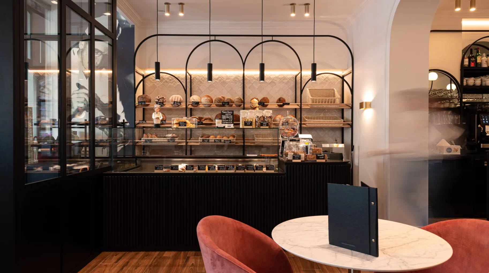
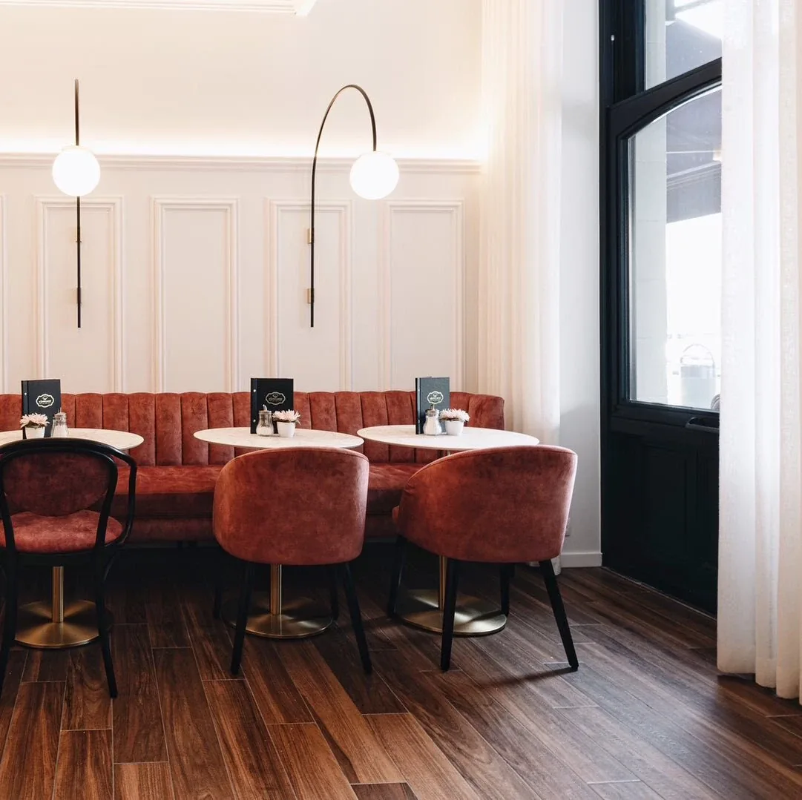
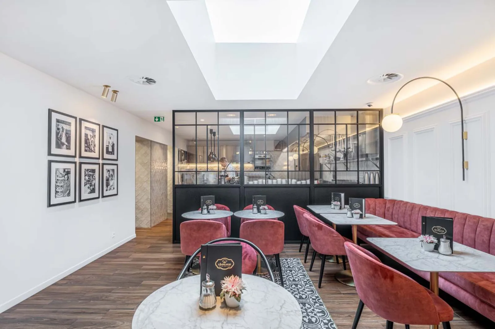
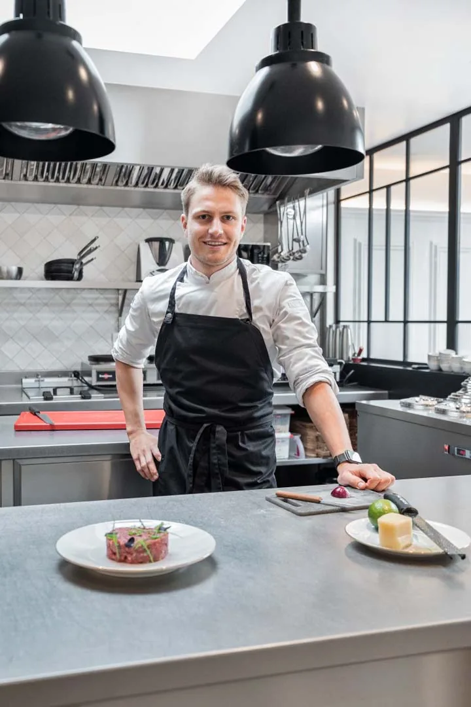
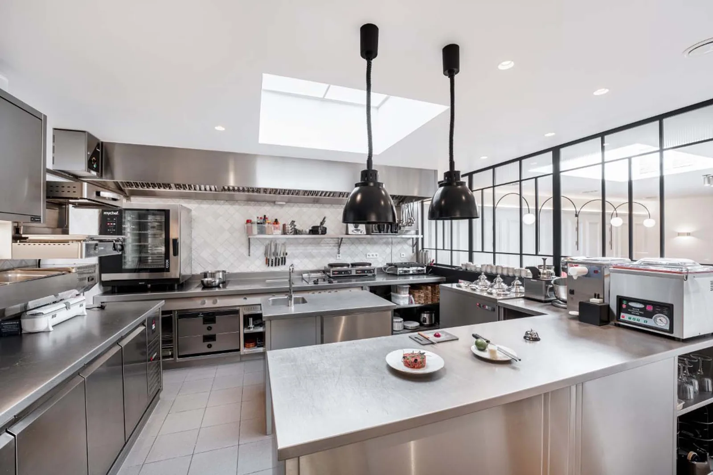
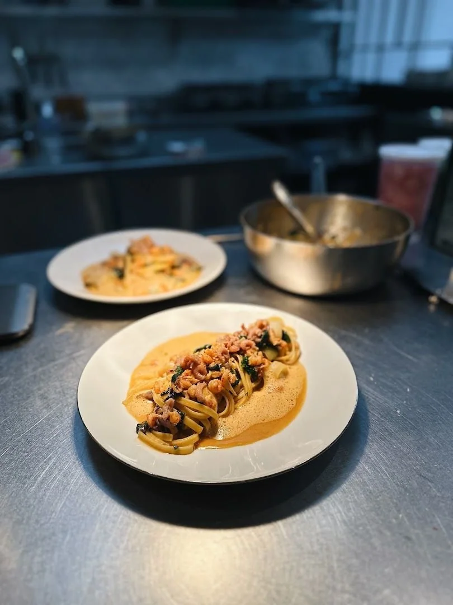
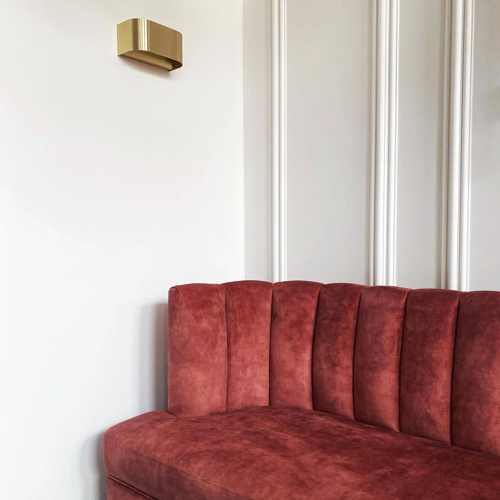
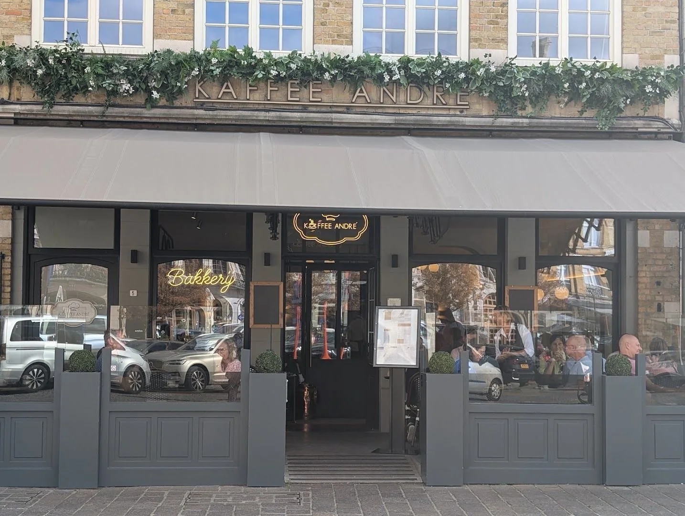

Even naar Parijs, op de Grote Markt
Kaffee André draagt de naam van onze grootvader, bakker en chocolatier. We werken nog met zijn recepten. Kom ontbijten, lunchen of 's middags een pannenkoek eten met zicht op de Lakenhalle.


Van het eerste ei tot de laatste wafel
Je mag de hele dag binnenlopen. Wel handig om te weten wanneer de keuken wat serveert.
Ontbijt
- Gepocheerd ei of roerei, met brood uit de bakkerijhoek
- Gerookte zalm
- Koffie of warme chocolademelk, met iets zoets uit de toonbank
Lunch
Elke week een andere weeklunch, en de klassiekers van de kaart voor wie weet wat hij wil.
Tearoom
- Pannenkoek met hoeveboter, suiker en verse slagroom
- Crêpe Normande met gecarameliseerde appeltjes en een vleugje calvados
- Wafels, vers gedraaid ijs en gebak uit de toonbank

Vier generaties achter één naam
André De Groote was bakker, patissier, chocolatier en ijsbereider. Hij was mijn grootvader, en hij is te vroeg gestorven.
Zijn recepten zijn gebleven. Mijn vader Herman kreeg ze mee, ik kreeg ze mee. Met Kaffee André geven we ze een plek waar iedereen ze kan proeven.
Je merkt het aan het gebak, aan de pannenkoeken en aan het ijs. En aan de muur, waar André en de familie gewoon mee in de zaal hangen.
- Andrébakker, patissier, chocolatier en ijsbereider
- Hermanzijn zoon
- Peterzijn kleinzoon, achter de toog en in de keuken
- Zoëzijn achterkleindochter, in de zaal
De keuken staat open. Je ziet ons koken.
Achteraan ligt de keuken, achter een glazen wand. Chef Simon, Peter en Pedro koken er alles van ontbijt tot lunch. Nathalie en Zoë brengen het naar je tafel.



Vooraan aan de toonbank: huisgemaakt gebak en bio-brood van BIO Bakkerij De Trog, hier uit Ieper. Ook om mee te nemen.

"Waaw, je waant je echt in Parijs, zooo sfeervol en gezellig."
Ilse Soete
"Heerlijke pannenkoek gegeten met hoeve boter, suiker en verse slagroom. Je smaakt echt dat het gemaakt werd met ambachtelijke producten!"
elise parret
"Super lekkere vers gedraaide ijs met vers slagroom! Alles is er super lekker zeker ook eens de wafels proberen."
Lien Claeys
"De bediening/personeel zijn meer dan vriendelijk! Voor mij de beste zaak in centrum Ieper!"
celine claeys
Letterlijk overgenomen uit reviews op Google.
Ontbijt in bed, van bij ons
Verjaardag, moederdag of gewoon een zondag waarop niemand zin heeft om te koken. Je bestelt een ontbijtbox en haalt hem 's morgens op aan de Grote Markt.
- Ontbijtboxvoor twee
- Kidsboxvoor de kleintjes
- Extra persoonschuift mee aan
- Fles cava of champagnevoor een feestje
Bestel op tijd, zeker rond feestdagen. Prijzen en ophaaluren vind je bij het bestellen.
Vijf dagen per week open
- Woensdag tot zaterdag8u30 tot 18u
- Zondag8u30 tot 17u30
- Maandag en dinsdaggesloten
8900 Ieper
